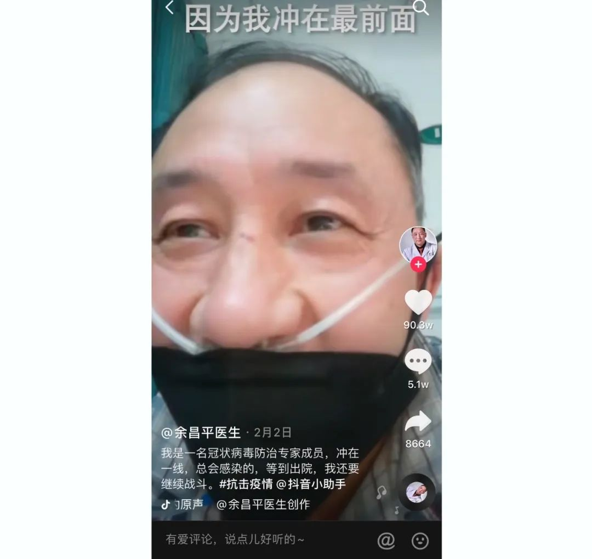
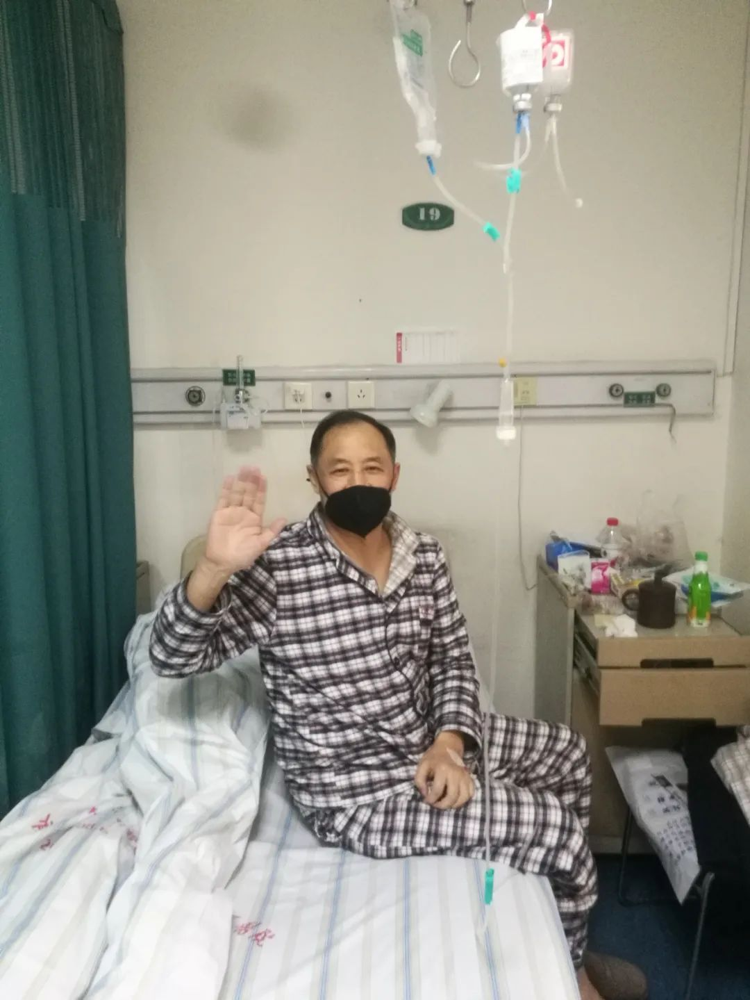

“网红”医生余昌平：重症归来
原文链接 备份链接 ********** *****武汉大学人民医院呼吸内科副主任医师，52岁的余昌平1月中旬确诊了新冠肺炎。**********在与病毒搏斗的40天里，余昌平一度病危，但他用乐观的心态去治疗，录制短视频科普“新冠病毒”， …
从一开始，余昌平就想过自己可能会被感染。他是武汉大学人民医院呼吸与危重症医学科的医生，疫情发生后，他成为医院冠状病毒防治专家组的成员。
专家组成员被感染？听起来有点严重。余昌平觉得很正常：“接触那么多病人，总是会感染的，因为我冲在最前面，总有一天会倒下”。
病倒了，余昌平也不愿意闲着。他注册了个抖音号，身体稍微好点的时候就拍拍视频，让同事帮忙上传。余昌平用一口需要配字幕的武汉话，分享自己的亲身经历，从感觉到有症状，“一吃东西就打嗝、打屁”，到经历重症期，连续五天没起床，认真地分析自己有多大概率会死，“有30%的可能性”；再到后来，病情逐渐好转，他又继续笑着对网友说：“今天来吹吹牛，我这个性格，不吹牛做什么呢？”
在他看来，被感染也是一种经验。作为医生，他想把自己的经历和感受分享给更多人，让大家意识到防护的重要性，但是也不必过分害怕，“用武汉话说，怕个球，恐慌个毛线”。
抖音上，100多万网友在关心他恢复的进展，看到他拍视频的精神状态越来越好，很多人也受到了鼓励。2月24日，两次核酸检测复查结果均为阴性的余昌平准备出院了。连续吃了五个星期医院盒饭的他，终于“打”赢了自己和新冠肺炎的“拉锯战”。等隔离期结束后，余昌平说自己最想做的事情是吃肉，“红烧肉、五花肉，越肥越好”。

“我被感染了，但是不怕”
1月31日，还戴着氧气管的余昌平开始琢磨要做点什么。这是他住院的第14天，从2月17日检查显示肺部有感染开始，他经历了从疑似、到确诊、迅速发展为重症、再到缓慢恢复为轻症的过程。
他是武汉大学人民医院最早一批被感染的医务人员之一。在新冠病毒还只是被模糊地称为“新型肺炎”的时候，他每天要接触好几例疑似病例。1月8号，轮到余昌平值班，他会对不同科室转来的发热患者进行会诊，在这天，他遇到了6个有着相似病毒性肺炎症状的病人。
1月14日，余昌平开始发烧，38.5℃，始终不退烧，但是别的方面都似乎正常，有点奇怪的是一吃东西就打嗝，像肠胃炎吗？不像，不拉肚子；但似乎也不像这几天看到的那种“新型肺炎”，自己就只是发烧。
琢磨到17日，快过年了，科室的同事们约好下班后聚餐，余昌平决定还是先去检查一下。“万一是呢，科室几十个人，影响就很大了”。检查结果很快出来，余昌平和另外一个同事同时住进了医院。
在余昌平住院的这14天里，疫情已经迅速从武汉蔓延至全国各地，所通报的确诊病例也从1月17日武汉的45例攀升至全国的9692例。新型冠状病毒所引发的疫情来得凶猛，作为医生，同时也是患者，他有很多想要表达的。对于这个“敌人”，他也困惑过，甚至自己也被感染了，但他相信，到最终，自己还是了解对方的。
他想做点事情，虽然平常总会“抱怨”做医生辛苦，“工作压力大、精神压力大”，但当自己病倒的时候，他还是觉得自己应该再做些什么。
“想告诉大家，这个病是怎么回事”，余昌平先是尝试了语音分享，发现效果不好；突然想到可以录像，准备了几分钟，就开始对着手机录，因为还有些气喘，他索性把口罩也扯了下去，后来才发现自己当时没洗头也没洗脸。
在这个近14分钟的视频里，他回顾了自己过去14天的全过程。他爱笑，语气幽默，像每个群体里都会有的热情老大哥，真诚又轻松地告诉网友，他也被感染了，但是，不怕。
“我这么潇洒，这么可爱，死了多可惜啊”
但是家人会害怕。
刚住进医院的前三天，余昌平病情不重，尚未觉得胸闷气短，还能自己走下楼去做CT 复查。
他知道这个病的发展过程，双肺病变会一天天地加重，甚至变成重症，会呼吸困难；即使脱离重症，病情也好得慢，乐观的话也需要三四周才能恢复。
余昌平在心里暗暗希望病情发展能慢一些，这样能给自己和医务人员都留下更多时间和空间。但现实不像他一样乐观，复查之后的第三天，余昌平病情迅速恶化。严重的胸闷、呼吸困难，浑身乏力，连续五天，余昌平都不能下床，甚至连坐起来的力气都没有。
最重的时候，自己也有点担心。他觉得自己有30%死掉的可能，最怕的是病情极速恶化、重症的状态又拖得久，很多患者就倒在这一步，“但万一到了那一步，谁也没办法”。
但转念一想，当下最要紧的事情是活下去。余昌平的信念来自于对自身和病情的了解：自己身体素质较好，能够和病毒“打”下去；虽然病情严重，但是能吃能睡，烧退了就有食欲，呼吸不畅时实在吃不动，就慢慢吃。

像给别的病人制定治疗方案一样，他给自己定的任务是能尽快地度过危险期，从重症的状态中摆脱出来。几近弥留之际，医院又人力紧张，余昌平决定让妻子过来照顾，医院也破例同意了。
他评估过风险，如果自己能撑过危险期，就能活；妻子过来照顾，也有可能会感染，但从病毒的传播规律判断，妻子万一感染，应该会是轻症。
妻子没想那么多。一天几趟地从家送饭、送水果到医院，让他吃好有力气；给他打气，每次见他都会笑，甚至故意惹他生气，看他有力气发脾气才放心。
第五天过去的时候，余昌平再次复查。没有力气下床，就托人找了把轮椅推着，他自己抱着氧气袋，等强撑着精神把CT拍摄的过程完成，他自己心里也有了判断：“最困难的时间，已经过去了”。接下来，是挨过“拉锯战”，慢慢就能好转了。
过后余昌平才知道，病重的那几天，妻子天天给自己姐姐打电话，边打边哭，哭完了再去给他送饭，笑着让他多吃。他用妻子给自己打气的方式开玩笑，“她是该哭，我这么潇洒、这么可爱，死了多可惜啊”。
后来，妻子也被感染了，好在是轻症。余昌平觉得有点内疚，最严重的时候自己需要妻子的陪伴，但毕竟是将她置于危险之中，“之后不止是夫妻，而是生死之交”。
“笑代表信心，代表力量”
余昌平是湖北荆州人，博士毕业后就一直在武汉大学人民医院工作。他觉得自己的性格很适合做医生，开朗、乐观，像他在拍视频时所说的那样，“给点阳光就灿烂”。科室里的同事都爱跟他待一块，出差、旅游，哪里有他，哪里就有欢乐。
“你看我一直在笑，笑代表信心，代表力量，我希望给你们信心和力量”，通过在抖音拍视频，他把这种乐观也传递给了许多网友。在他看来，对疾病了解得越清晰，心里就越不会恐慌，而积极的心态有助于更好地面对这“欺软怕硬”的病毒。
不断有受到乐观情绪感染网友在他的分享下留言：“实实在在、通俗易懂”、“不恐慌，不害怕，做好防护”……

余昌平总是在笑
随着病情的日趋好转，余昌平更新视频的频次也高了起来。除了分享自己的恢复进展，他还开始做更多和科普相关的事情：分享自己对疫情发展的看法；建议同行们在进行新冠肺炎的诊断时，将CT 结果作为重要的判断标准；而对于许多人谈之色变的“激素”，他也不断地拍视频向网友解释，合理地使用激素为什么能够有效帮助治疗病毒性肺炎。
2月4日，余昌平被中央电视台的《焦点访谈》报道。更多人了解到了他通过抖音短视频科普新冠肺炎的事情，第二天一早，他的主治医生查房时都笑着说余昌平“成网红了”。
被更多人知道的余昌平更忙了。不断有同行和他交流对新冠肺炎的看法，有患者的家属跟他交流恢复情况，也有越来越多的人向他咨询。和新冠肺炎相关的专业问题，余昌平都会坚持自己回复；有了新的心得体会和病例，他也会通过拍视频的方式分享给更多人。
现在，余昌平和妻子都已经出院。再经过14天的隔离期，一切顺利的话，他就能在武汉的春天里转转。
之后，等空闲的时候，他还会在抖音上继续科普新冠肺炎，为更多人带去信心。他还考虑以后做些医学相关的科普，让更多人知道医学是什么、医生是什么。
＊＊＊
余昌平为“中国红十字基金会字节跳动医务工作者人道救助基金”受助人。
2020年1月25日，今日头条、抖音、西瓜视频母公司字节跳动向中国红十字基金会捐赠2亿元人民币，设立“中国红十字基金会字节跳动医务工作者人道救助基金”，为抗击疫情一线医务工作者提供保障。
截至2020年2月26日，全国已经有966名疫情防控一线医务工作者获得该专项基金资助。其中，951名因抗击疫情而不幸感染的一线医务工作者，每人获得10万元资助；15名因抗击疫情而不幸殉职的一线医务工作者，每个家庭获得100万元资助。
疫情防控一线医务人员保障基金申请请戳

原文链接 备份链接 ********** *****武汉大学人民医院呼吸内科副主任医师，52岁的余昌平1月中旬确诊了新冠肺炎。**********在与病毒搏斗的40天里，余昌平一度病危，但他用乐观的心态去治疗，录制短视频科普“新冠病毒”， …
原文链接 备份链接 【财新网】（实习记者 黄雨馨）“目前，信心就是最好的特效药。”“网红”医生余昌平说。“原则上来说，现在病毒没有药物可以治疗，身体、心态、吃好喝好睡好休息好，这是最好的治疗。” 2月23日是余昌平住院第38天。作为武汉大 …
原文链接 备份链接 有时候半夜突然想到某个可能的漏洞，惊出一身冷汗。 记者 | 黄 祺 抗击新冠肺炎疫情的紧要关头，医院不能失守。 中国疾控中心2月17日的一份研究报告显示，全国已有3019名医务人员感染了新型冠状病毒，其中包括1716 …
原文链接 备份链接 应该做一个自私的人，还是坚持自己：做一个对社会有用的人？ 口述 | 高 集 整理 | 沈 林 今天是我自愿隔离在家的第14天，按理说，我已经可以正常出门了。但是最近发生的事，让我的心情很复杂。 我叫高集，20多岁的时 …
原文链接 备份链接 截至目前，巴西确诊拉丁美洲首例新冠肺炎病例。疫情正在从意大利向国外蔓延，周边邻国瑞士、奥地利相继出现首例确诊病例，西班牙新增一例确诊病例，确诊患者均与意大利有关。 截至25日，中东有新冠肺炎确诊病例的国家已增至9个： …